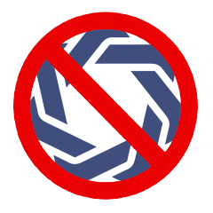

Ønsker du at yde den bedst mulige selvpleje, så vil Beard wash af mærket Butch leaf & Sage være lige noget for dig. Beard wash efterlader skægget vel vasket og med mild duft. Ikke nok med at beard wash vil give dit skæg nyt liv og bringe fugt til ansigtet, vil du med Beard wash også være i stand til, at vaske både røv og skridt. De nøje udvalgt produkt kemikalier der samlet bibeholder den naturlige balance og lave pH-værdi, udgør derfor den første intimsæbe til mænd. Nu spørger du nok for dig selv “Det der intimsæbe pis, det er da vel kun til kvinder”, men lige der tager du fejl. Med denne sæbe kan du nemlig slippe for hygiejneproblemer, da du med almindelig sæbe skader mere end du gavner i dette område. Idéen med at det skal kunne bruges både i hovede og røv, kommer i at du på sin vis er lige så følsom i ansigtet som ved de intime del.
- 


Ikke noget naturpis!
Med lækkert skæg, kommer også stort ansvar!
Tekst der skal passe her til